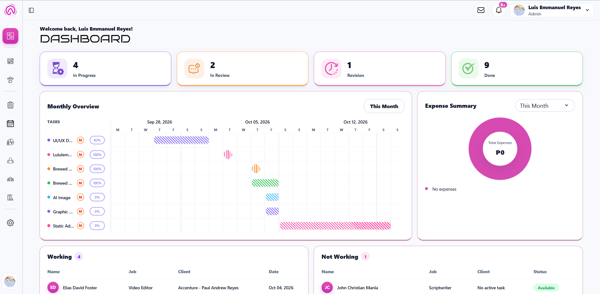

Academic Capstone · Oct 2025 – Nov 2026
CLIENTRA
Business Management and Project News Feed System
A web-based business management system designed for a creative services company to streamline business operations and project workflows.
Project & task managementClient managementDashboard & budget planningChat & news feed
My contributions System development, UI design and user flows, testing and debugging, documentation and deployment.